Amplificateur opérationel
Introduction
Fonctionnement en boucle ouverte
En boucle ouverte (BO), l'AOP fonctionne avec une entrée différentielle.
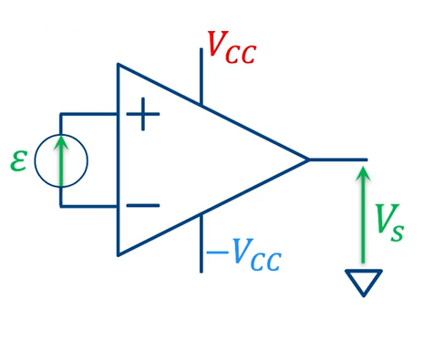
ε = Vd = V+ − V−
Vs = Av₀ × ε
avec Av₀ > 1.000.000 pour un AOP réel.
Saturation et zone de fonctionnement linéaire
Les tensions de saturation VSAT− (-VCC) et VSAT+ (VCC) définissent les tensions maximales et minimales que peut atteindre la sortie de l'AOP.
- Entre les deux tensions de saturation, l'AOP fonctionne en régime linéaire.
- La zone de fonctionnement linéaire en entrée est donnée approximativement par : [VSAT− / Av₀ ; VSAT+ / Av₀]
- Cette plage de fonctionnement est extrêmement faible en boucle ouverte.
- Par exemple, avec Av₀ = 1.000.000 et une alimentation de ±15 V, la plage différentielle d'entrée est de l'ordre de 30 µV.
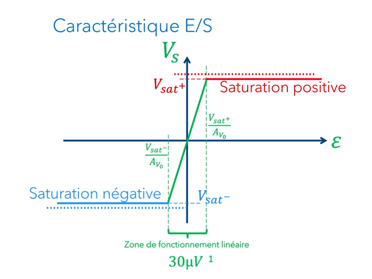
Conclusion : un AOP n'est pas conçu pour fonctionner en boucle ouverte.
Les trois zones de fonctionnement
Pour un AOP parfait, on distingue trois zones principales de fonctionnement :
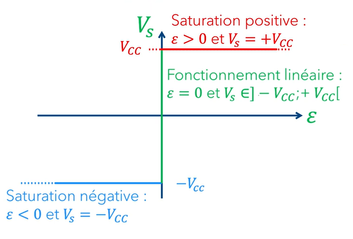
Courants d'entrée
- En pratique, les courant des entrées ne sont pas strictement nuls, mais ils restent extrêmement faibles et peuvent être considérés comme négligeable.
Rétroaction
- Pour faire fonctionner l'AOP en régime linéaire, il est nécéssaire d'avoir une boucle de rétroaction négative.
- Il faut également vérifier qu'aucune boucle de rétroaction positive n'est présente.
- Lorsque l'AOP fonctionne en boucle ouverte ou avec une rétroaction positive, il fonctionne en saturation. Dans ces modes de fonctionnement, on privilégie généralement l'utilisation d'un comparateur plutôt que d'un AOP. Voir la section « Comparateur à hystérésis» pour plus de détails.
Suiveur de tension
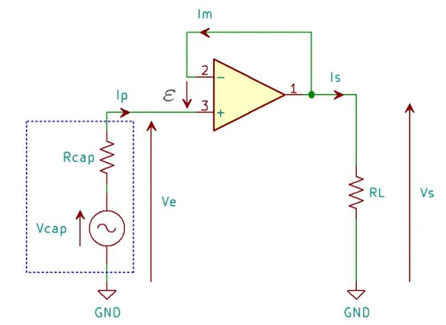
Calcul de la tension de sortie
- La contre-réaction négative garantit le fonctionnement linéaire. (V+ = V-)
- Im = 0A et Ip = 0A.
- On a V+ = Ve et V- = Vs.
- Comme V+ = V-, on obtient Vs = Ve.
Vs = Ve
Le suiveur de tension évite que la résistance de charge RL ne perturbe l'information produite par le capteur. Avec un simple pont diviseur, la tension du capteur serait fortement atténuée :
RL = 100 Ω, Rcap = 10 kΩ, Vcap = 0,1 V
Vs = Vcap × RL RL + Rcap = 0,00099 V
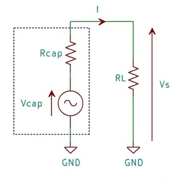
Amplificateur inverseur
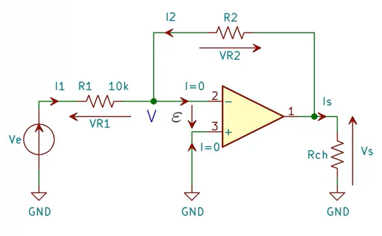
Calcul de la tension de sortie
ε = 0 ⇒ V+ = V- = 0 V
Vs = R2 × I2
Ve = R1 × I1
I1 = -I2
Donc Vs Ve = - R2 R1
Vs = - R2 R1 × Ve
Exemple de dimensionnement
On souhaite obtenir un gain de G0 = 20 dB.
G0 = 20 log10 (|
Vs
Ve
|)
Vs = -10 × Ve
Il faut donc R2 R1 = 10 . Pour R1 = 10 kΩ, on choisit R2 = 100 kΩ.
Observations
- Le courant prélevé sur la source n'est pas nul.
- La résistance de charge Rch n'a pas d'incidence sur Vs.
Amplificateur non inverseur
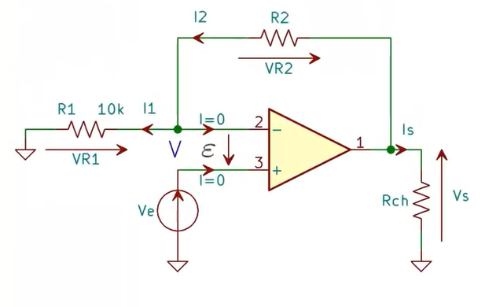
Calcul de la tension de sortie
V = VR1 = Ve
V = Vs × R1 R1 + R2
Donc Ve = Vs × R1 R1 + R2
Vs = Ve × R1 + R2 R1 = Ve × (1 + R2 R1 )
Av = 1 + R2 R1
Vs = Ve × (1 + R2 R1 )
Observations
- Le courant prélevé par la source d'entrée est presque nul, ce qui est intéressant pour les capteurs fournissant très peu de courant.
- La résistance de charge Rch n'a pas d'incidence sur la sortie Vs.
Additionneur
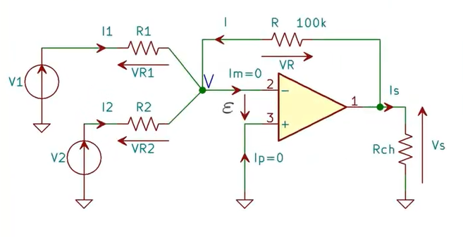
Calcul de la tension de sortie
On étudie chaque branche séparément, puis on additionne les contributions des différentes entrées.
Vs1 = - R R1 × V1 (Si on supprime V2)
Vs2 = - R R2 × V2 (Si on supprime V1)
Vs = Vs1 + Vs2
Vs = -R × V1 R1 - R × V2 R2
Vs = -R × ( V1 R1 + V2 R2 )
Observations
- La sortie est la somme pondérée des entrées, avec des coefficients de pondération négatifs.
- Les courants prélevés sur les sources ne sont pas nuls.
- La résistance de charge Rch n'a pas d'incidence sur Vs.
Soustracteur
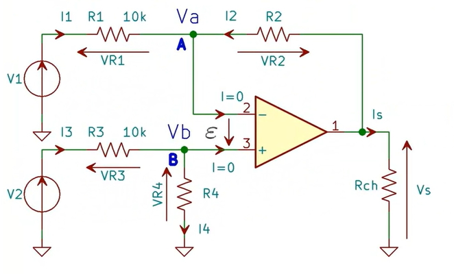
Calcul de la tension de sortie
On analyse séparément les deux branches du montage, puis on utilise l'égalité des tensions d'entrée de l'AOP en régime linéaire :
1. Étude du point VA
VR1 = V1 - VA
VR2 = Vs - VA
(1) I1R1 = V1 - VA
(2) I2R2 = Vs - VA
Dans (2), On isole I2 = Vs - VA R2 et comme I1 = -I2,
On peut remplacer I1 dans (1) : VA - Vs R2 R1 = V1 - VA
⟺ VAR1R2 - VsR1R2 = V1 - VA
⟺ VAR1 - VsR1 = V1R2 - VAR2
⟺ VAR1 + VAR2 = V1R2 + VsR1
⟺ VA(R1 + R2) = V1R2 + VsR1
VA = V1R2 + VsR1 R1 + R2
2. Étude du point VB
VB = V2 × R4 R3 + R4
3. Mise en commun
⟹ Va = Vb
Alors : V1R2 + VsR1 R1 + R2 = R4V2 R3 + R4
V1R2 + VsR1 = R4V2(R1 + R2) R3 + R4
VsR1 = R4V2(R1 + R2) R3 + R4 - V1R2
Vs = V2 R1 + R2 R1 R4 R3 + R4 - V1 R2 R1
Forme finale de la mise en commun :
Vs = V2 R1 + R2 R1 × R4 R3 + R4 - V1 R2 R1
Cas particulier : soustracteur classique
Dans le cas particulier où les rapports de résistances sont choisis de manière à obtenir :
R2 R1 = R4 R3
Le montage réalise alors une soustraction pondérée des deux tensions d'entrée.
Observations
- La sortie est une différence pondérée des deux tensions d'entrée.
- Les courants fournis par les sources ne sont pas nuls : ils circulent dans les résistances d'entrée du montage.
- La résistance de charge Rch n'a pas d'influence sur la tension de sortie Vs, dans les limites de fonctionnement de l'AOP.
- Le choix des rapports entre les résistances permet de régler le poids de chaque tension d'entrée dans la tension de sortie.
Comparateur simple
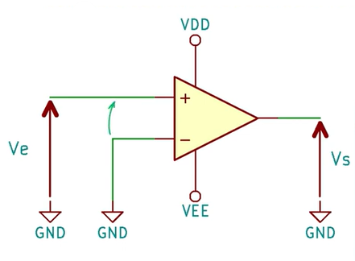
L'AOP est en saturation donc la tension différentielle d'entrée est :
ε = V+ − V−
Si ε < 0 ça veut dire que V+ < V−
Alors Vs = VEE
Si ε > 0 ça veut dire que V+ > V−
Alors Vs = VDD
V+ = Ve et V− = 0V
Donc si Ve > 0 <=> Vs = VDD
Et si Ve < 0 <=> Vs = VEE
Caractéristique entrée/sortie
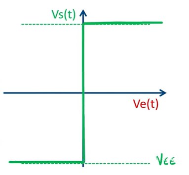
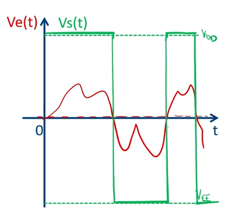
Comparateur avec seuil
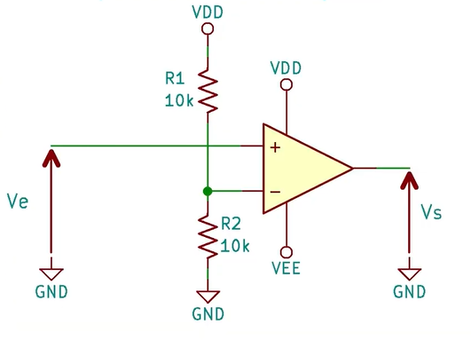
Un pont diviseur fournit la tension de référence :
Vseuil = R2 R1 + R2 VDD
Si R1 = R2 : Vseuil = VDD 2
La tension d'entrée Ve est comparée à Vseuil :
Si Ve > Vseuil
Vs = VDD
Si Ve < Vseuil
Vs = VEE
Caractéristique entrée/sortie
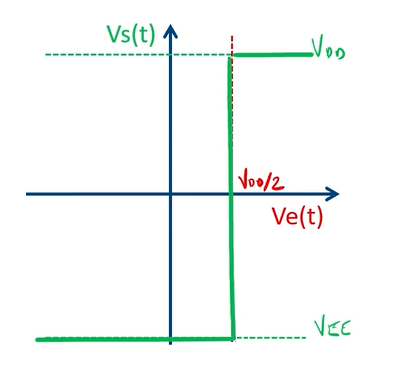
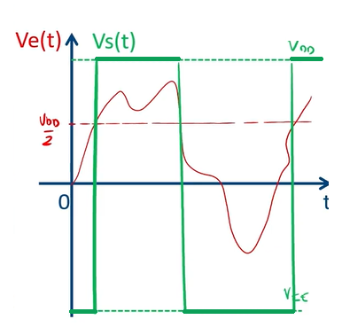
Remarque
Un comparateur simple est sensible aux variations et au bruit lorsque Ve est proche de Vseuil. Pour éviter plusieurs commutations parasites, on peut utiliser un comparateur à hystérésis.
Mettre un condensateur sur R2 permet de filtrer Vseuil pour qu'il soit stable.
Comparateur à hystérésis
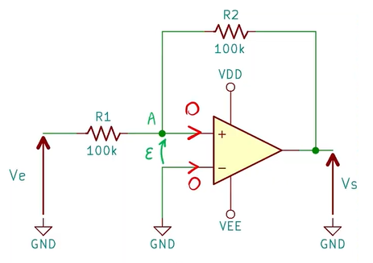
Le comparateur à hystérésis permet d'éviter les faux déclenchements dus au bruit. L'AOP fonctionne en régime non linéaire donc :
ε = V+ − V−
Calcul de VA pour calculer les seuils de commutation
On cherche la tension VA à partir des relations dans les deux branches du montage :
VR1 = VA - Ve
VR2 = VA - Vs
(1) I1R1 = VA - Ve
(2) I2R2 = VA - Vs
Dans (2), on isole I2 = VA - Vs R2 et comme I1 = -I2, on peut remplacer I1 dans (1) :
⟺ VA - Ve = R1 R2 (Vs - VA)
⟺ VAR2 - VeR2 = VsR1 - VAR1
⟺ VAR2 + VAR1 = VsR1 + VeR2
⟺ VA(R1 + R2) = VsR1 + VeR2
VA = VeR2 + VsR1 R1 + R2
Seuils de commutation
Lorsque ε > 0
La sortie sature à Vs = VDD = +VCC.
Avec ε = V+ - V- = VA - 0 = VA, on a :
R2Ve + R1VCC R1 + R2 > 0
⟺ R2Ve + R1VCC > 0
⟺ R2Ve > -R1VCC
⟺ Ve > - R1 R2 VCC
Ve > - R1 R2 VCC
Ve > - Vseuil
Lorsque ε < 0
La sortie sature à Vs = VEE = -VCC.
Avec ε = V+ - V- = VA - 0 = VA, on a :
R2Ve - R1VCC R1 + R2 < 0
⟺ R2Ve - R1VCC < 0
⟺ R2Ve < R1VCC
⟺ Ve < R1 R2 VCC
Ve < R1 R2 VCC
Ve < Vseuil
Caractéristique entrée/sortie
Vs = +VCC si Ve > -Vseuil
Vs = -VCC si Ve < +Vseuil
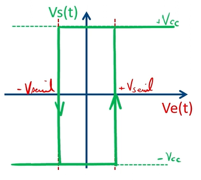
Pourquoi utiliser un comparateur dédié plutôt qu'un AOP ?
Un AOP classique peut présenter plusieurs limites lorsqu'il est utilisé en régime non linéaire :
- Une saturation lente lors du passage d'un état à l'autre.
- Un temps de récupération important après saturation.
- Un comportement moins prévisible hors régime linéaire.
Conversion Courant-Tension (Photodiode)
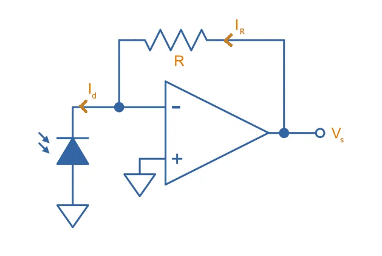
Ce montage convertit le courant produit par la photodiode en une tension de sortie.
- L'AOP fonctionne en régime linéaire donc les tensions d'entrée sont égales : V- = V+ = 0 V.
- Le courant d'entrée de l'AOP est nul.
Calcul de la tension de sortie
VR = Vs - V-
V- = 0 V
Id = IR
IR = VR R
⟺ VR = Vs
⟺ Vs = R.IR
⟺ Vs = R.Id
Vs = R.Id
La tension de sortie est donc proportionnelle au courant généré par la photodiode, avec un facteur de conversion égal à la résistance de rétroaction R.